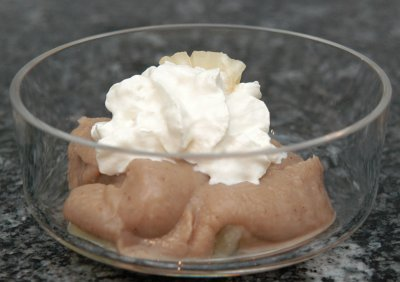

| Zutaten für 4 Personen: | |
| 1 Pack | Vermicelles |
| 1 Dose | Ananas (4 Scheiben) |
| 1 dl | Halbrahm |
Den gefrorenen Block Marronipüree 2 - 3 Stunden auftauen lassen.
3 Scheiben Ananas in Stückchen schneiden und in 4 Portionenschälchen verteilen.
Marronipüree mit dem Ananassaft glatt rühren. Masse über die Ananasstückchen verteilen.
Dessert mit steif geschlagenem Rahm und je einem Ananasviertel garnieren.
Wer will, kann die Crème mit etwas Kirsch parfümieren oder mit Schlagrahm dekorieren.
Herbert Eigenmann, Code: KNA
Ganz ok als kleines Dessert. RE 19.1.2008
@LINKBACK_TAG@ @WAKELOCK@